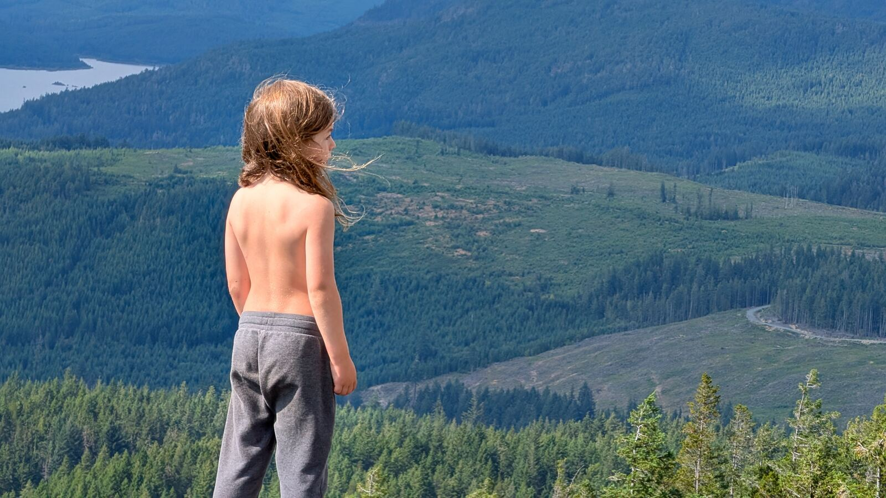
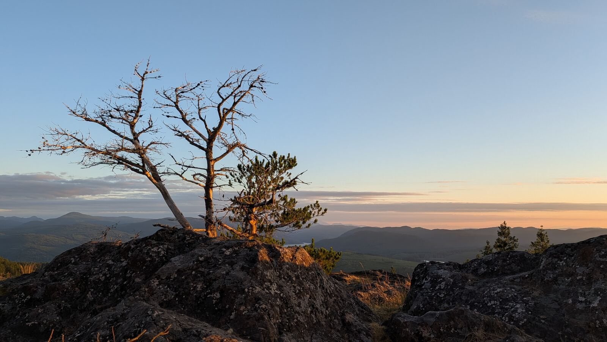
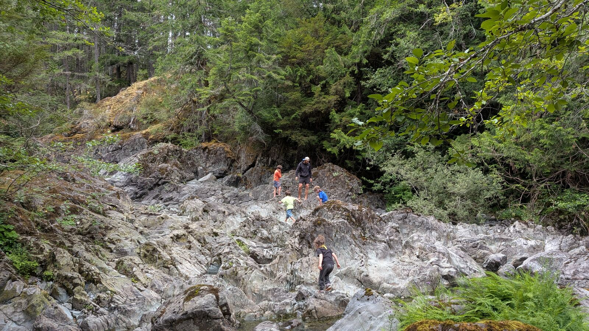
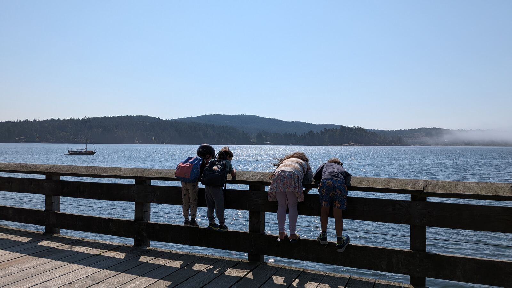
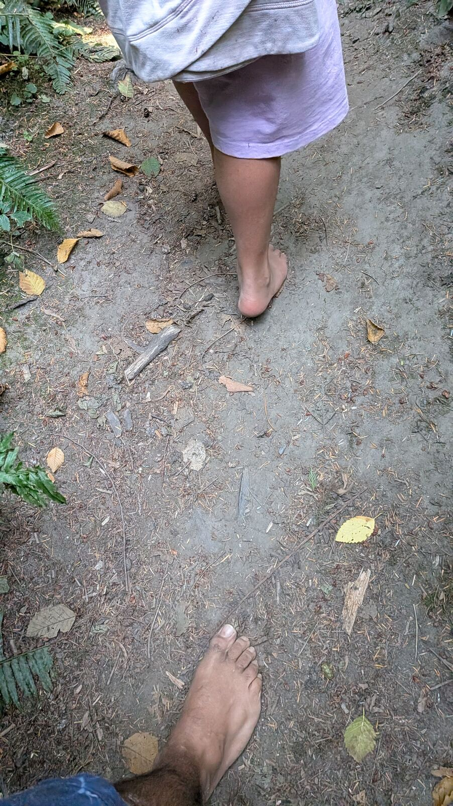

Don't live near Sooke? You don't need us there to make this happen where you are. This guide gets a community-led, once-a-week nature immersion program running with the people already around you.
The Guide
It's built from what we've learned actually running Magic Waters Nature Immersion, distilled into templates you fill in and adapt to your own place and your own children. Not a franchise. A starting point.
CA$25
One-time purchase, yours to keep and reuse.
Online checkout is on its way. For now, email us and we'll get you the guide directly.
What's Possible





Each Purchase Goes a Long Way
Every guide sold funds two things.
It keeps Magic Waters Nature Immersion running, delivering nature immersions to the children and families who show up here, week after week.
And it funds resources for nature-based learning communities building something similar, worldwide.